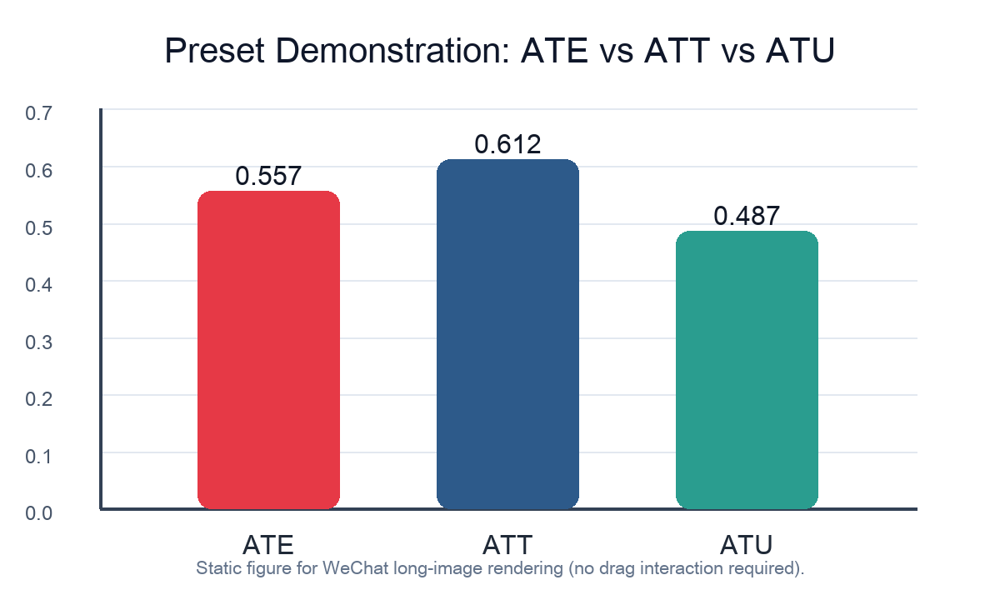

📊 深度论文解读
电价市场化改革的
市场势力之谜
一篇《管理世界》论文的深度拆解
与峰谷电价之谜
宋枫、兰梓艺、郭伯威、崔健 著
《管理世界》2025年第11期
深度解读 · 国际比较 · 批判分析
👇
2025年4月，国家发改委、能源局联合发布了《关于全面加快电力现货市场建设工作的通知》（发改办体改〔2025〕394号），明确提出"2025年底前基本实现电力现货市场全覆盖"。
而就在同一年，《管理世界》第11期刊发了宋枫等学者的重磅论文——《电价市场化改革与市场势力——基于成本传导率视角的经验证据》。
💡 核心问题
历经十年的电力市场化改革，我们真的建立起有效的价格机制了吗？55.7%的成本传导率意味着什么？
研究团队利用广东省电力市场小时级的高频出清数据，首次系统估计了中国电力市场的成本传导率：
📌 通俗理解
55.7%的传导率意味着，当煤炭价格上涨时，电价只传递了大约一半的涨幅。剩下的一半被发电商通过市场势力"截留"了。这说明广东电力市场虽然有了市场化改革的框架，但离真正的完全竞争还有相当距离。
| 市场 |
传导率 |
关键发现 |
| 中国广东 |
55.7% |
市场势力显著，碳成本传导不显著 |
| 法国 |
86-116% |
能源危机期间几乎完全传导 |
| 美国 |
70% |
寡头市场下消费者承担大部分成本 |
| 英国 |
60-90% |
批发市场价格传导存在时滞 |
法国研究发现，在2021-2022年能源危机期间，能源成本的生产者价格传导率高达86%-116%，但涨价时完全传导，降价时却只有19.6%的回溯。
—— Mejean等 (2023)
数据来源：Weyl & Fabinger (2013 JPE), Fabra & Reguant (2014 AER)
⚠️ 核心质疑
论文使用小时级数据估计出整体传导率55.7%，但电力市场的峰谷时段具有截然不同的市场结构——这个整体平均是否掩盖了重要的时段异质性？
电力市场的一天
-
⚡ 高峰时段（早8-12点，晚6-10点）
工厂开工、空调全开，需求刚性极强，供给紧张，少数大型火电机组掌握定价权
-
☀️ 低谷时段（凌晨0-6点）
需求锐减，风光大发，大量机组竞争，价格接近边际成本
理论预测对比
| 特征 |
高峰时段 |
低谷时段 |
| 需求弹性 |
小（0.2-0.4） |
大（0.8-1.5） |
| 供给状况 |
紧张 |
充裕 |
| 市场势力 |
强 |
弱 |
| 预测传导率 |
30-40% |
70-90% |
🔍 关键推论
如果分时段估计，高峰时段的传导率可能只有30-40%，而低谷时段可能高达70-90%。整体估计的55.7%掩盖了高峰时段更严重的市场势力问题！
1. 市场势力监管需要"因时而异"
如果高峰时段的市场势力确实更强，简单的整体监管是不够的。应该考虑引入分时市场力监测指标、在高峰时段实施更严格的行为监管、建立动态价格帽机制。
2. 需求响应比供给侧更重要
论文发现需求弹性越小，成本传导率越低。这意味着：通过分时电价提高需求弹性，可以削弱发电商的市场势力。394号文要求的"用户侧参与"正是破解之道。
3. 碳成本传导的政策设计
论文发现碳成本传导率42.9%且不显著，这与欧盟碳市场（60-80%）形成对比。中国的低传导率意味着碳价格信号未能有效传导至终端，需要加强电-碳市场协同机制建设。
💡 2025年底电力现货市场全国覆盖的目标，需要的不仅是市场的"量"，更是市场的"质"
📐 成本传导的核心估计式（MathJax）
\[
P_t = \alpha + \beta C_t + \gamma X_t + \varepsilon_t
\]
其中 \(\beta\) 表示成本传导率；若 \(\beta<1\)，通常意味着不完全传导与市场势力并存。
ATE vs ATT vs ATU
微信环境不支持MathJax渲染，请访问gh page查看完整版本！
# 预设参数（示意）
import numpy as np
# 三类效应（示意值）
effects = {
"ATE": 0.557, # 全体平均处理效应
"ATT": 0.612, # 已处理群体平均处理效应
"ATU": 0.487 # 未处理群体平均处理效应
}
print(effects)
ATE / ATT / ATU 对比图（预渲染静态图）

\[
ATE=E[Y(1)-Y(0)],\quad
ATT=E[Y(1)-Y(0)\mid D=1],\quad
ATU=E[Y(1)-Y(0)\mid D=0]
\]
微信公众号不支持MathJax渲染，请访问gh page查看完整版本！
👍 论文的贡献
- 首次系统估计了中国电力市场的成本传导率
- 小时级数据的使用显著降低了聚合偏误
- 区分燃料成本和碳成本的政策含义丰富
⚠️ 需要谨慎的地方
- 峰谷异质性：整体估计可能掩盖重要时段差异
- 内生性问题：成本与价格可能同时受负荷冲击驱动
- 样本局限：仅广东一地，其他地区是否适用？
💡 未来研究建议
- 分时段估计：将小时数据按峰/平/谷分类
- 工具变量法：使用国际煤价等外生冲击作为IV
- 跨省比较：比较广东、山西、山东等不同市场结构
宋枫等学者的这篇论文，恰逢其时地回答了一个关键问题：中国电力市场化改革是否真正建立了有效的价格机制？
55.7%的传导率告诉我们——改革有了框架，但竞争还不充分。
而本文提出的峰谷电价质疑，或许能为后续研究提供一个切入点。电力市场不是静态的、同质的市场，它在一天中的不同时刻都呈现出不同的市场结构特征。
只有理解这些异质性，我们才能设计出更精准、更有效的市场监管政策。
#电力市场
#成本传导率
#市场势力
#394号文
- 宋枫等 (2025). 电价市场化改革与市场势力. 管理世界, (11), 43-68.
- 国家发改委 (2025). 关于全面加快电力现货市场建设工作的通知（发改办体改〔2025〕394号）
- Mejean, I., et al. (2023). Energy cost pass-through and the rise of inflation. Working Paper.
- Weyl, E. G., & Fabinger, M. (2013). Pass-through as an economic tool. Journal of Political Economy, 121(3), 528-583.
- Fabra, N., & Reguant, M. (2014). Pass-through of emissions costs in electricity markets. American Economic Review, 104(9), 2872-2899.
感谢您的阅读
本文基于宋枫等（2025）《管理世界》论文
进行深度解读与批判性分析
更多精彩内容，敬请关注